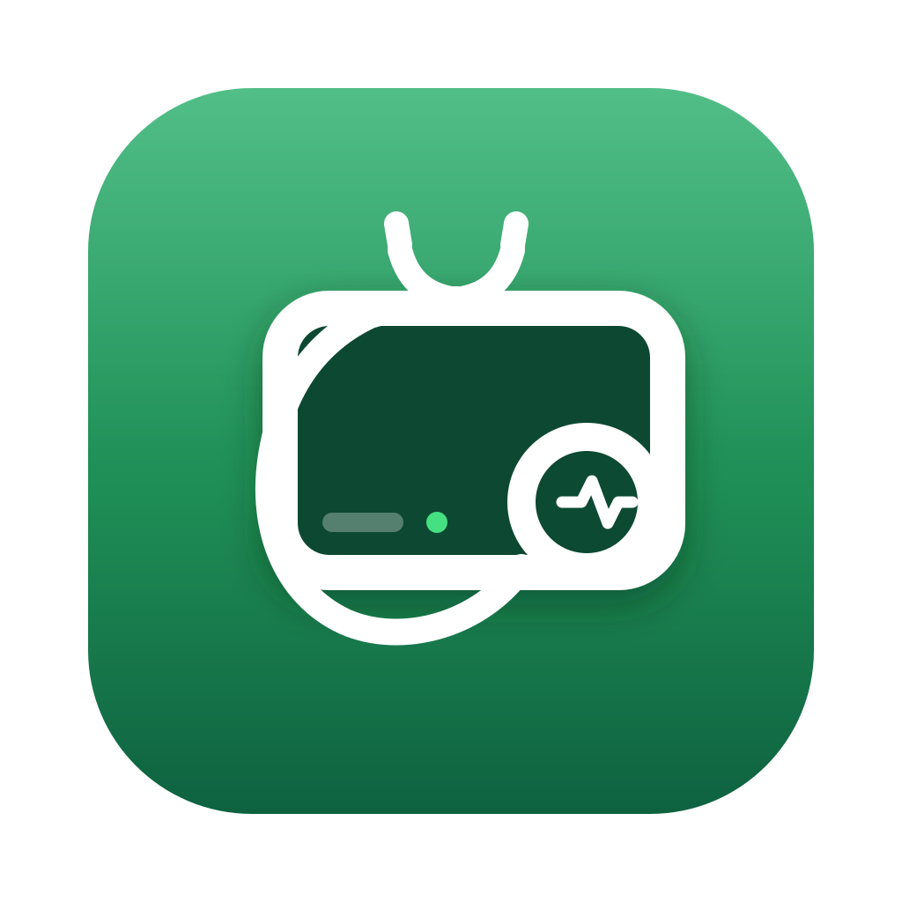
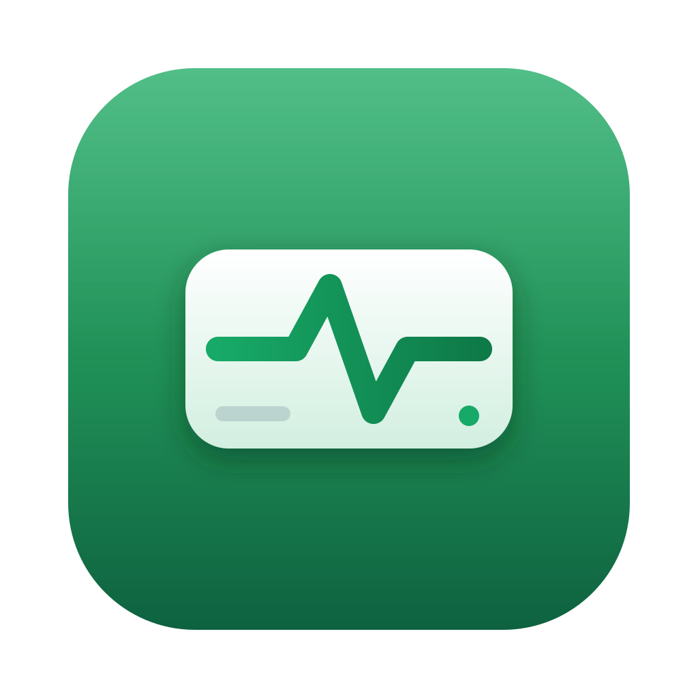
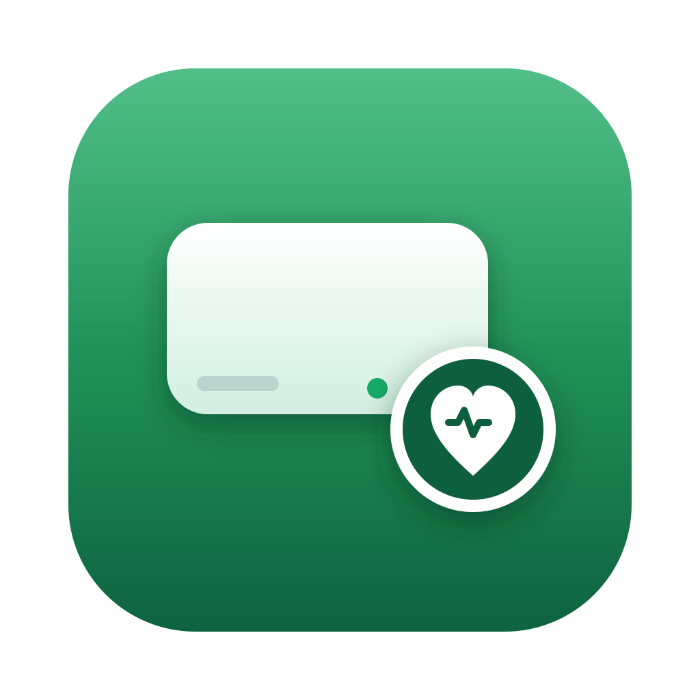
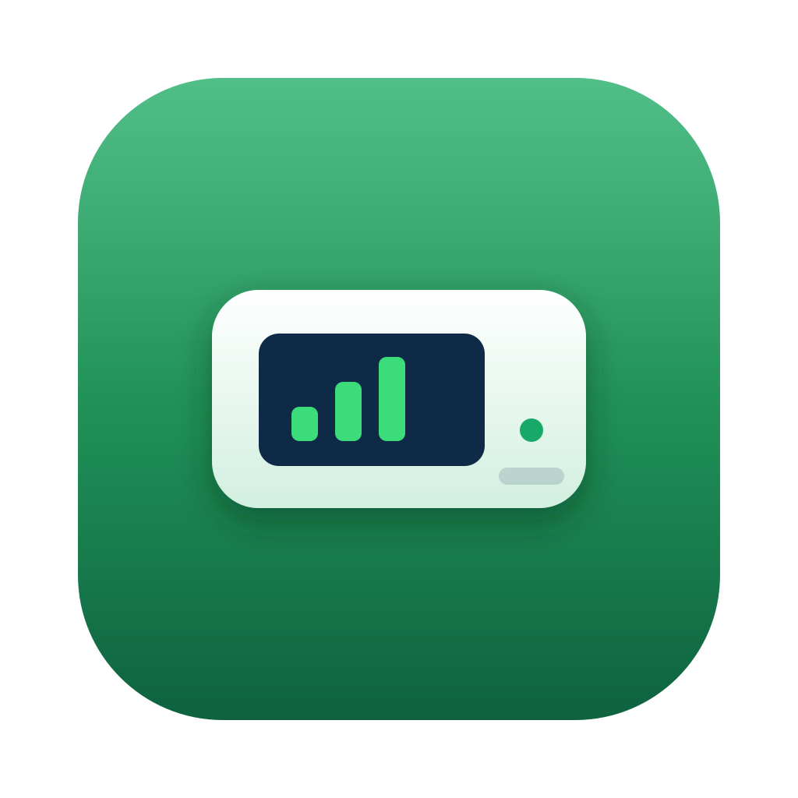

Green base, the drive as the primary subject, and a doctor-style check as the accent. Same size ladder: 240 px hero, 64 / 40 / 24 / 16 px chips.

Stethoscope draped over the drive, pulse in the chest piece — the doctor-check metaphor, literally.
RECOMMENDED
The drive as the hero with an EKG running across it — vitals check in one glance, very legible small.
Drive hero with the magnifier demoted to a corner accent, pulse in the lens.

Clean drive with a pinned health badge — heart with a heartbeat line.

Analytics on the device itself — a mini dashboard with rising bars on the drive’s face.